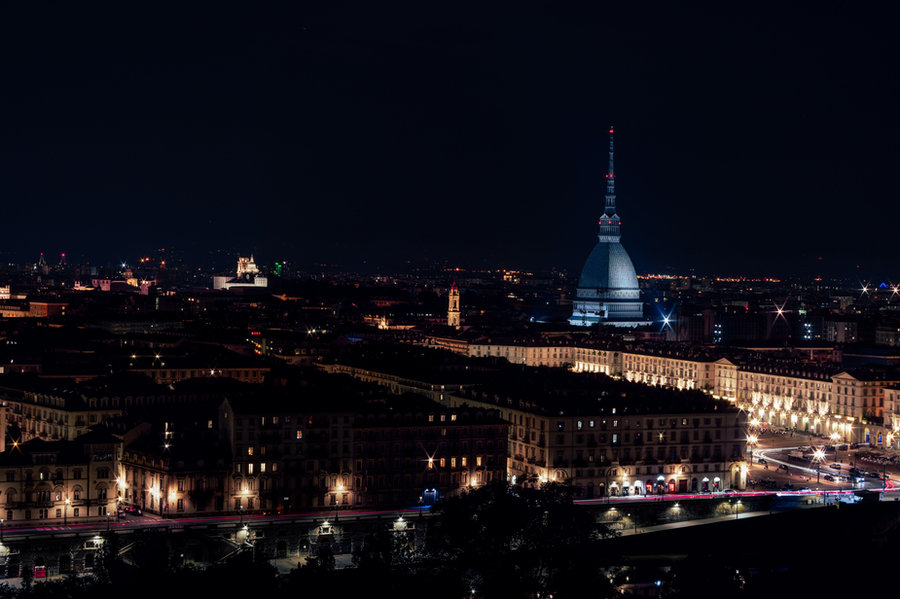
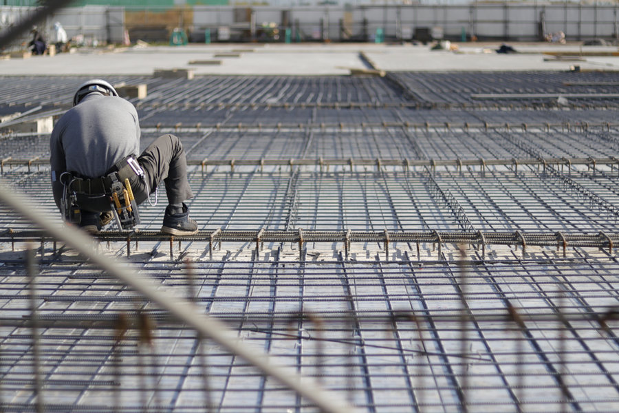
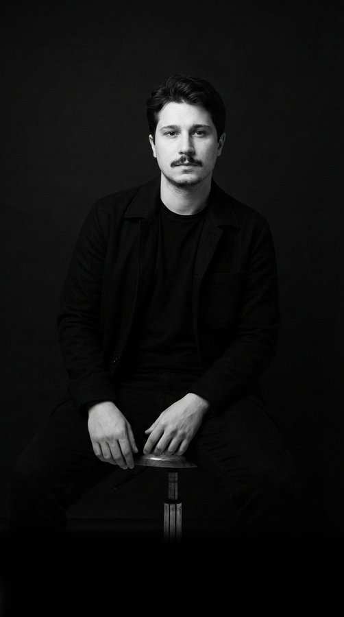
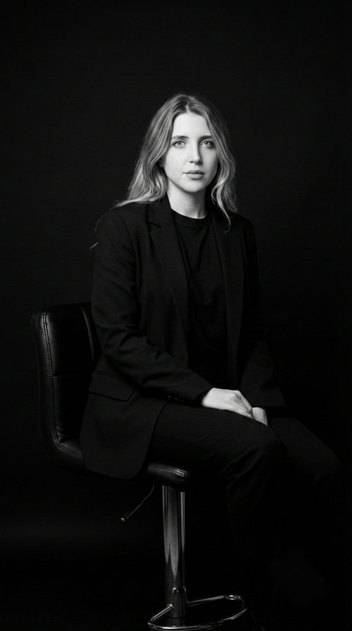

Hakkımızda — Stüdyo
Sınır tanımayan
bir İtalyan vizyonu.
Torinoarch, İtalya'nın köklü tasarım mirasından doğar; bu mirası Türkiye'den İtalya'ya, sınırların ötesindeki projelere taşır.
Torino'da kurulduk — İtalya ve Türkiye'de tasarlıyoruz.

Avrupa'nın estetik disiplinini güçlü bir ticari vizyonla buluşturuyor; mimari konseptten inşaat yönetimine uzanan tüm süreci tek merkezden, kusursuz biçimde yönetiyoruz. Yalnızca zamansız yaşam alanları inşa etmiyoruz — her projeye kârlı ve prestijli bir marka değeri kazandırıyoruz.
Çalışma Alanlarımız
Üç stüdyo. Tek vizyon.
Mimari konseptten inşaat yönetimine ve yatırım stratejisine — tüm disiplinler tek çatı altında.
Tasarım Stüdyosu
Altı disiplin, tek estetik strateji — kütle ve plan kurgusundan geleceğin ürün tasarımına.
Mimari Tasarım
Yapının mimari omurgasını kurar; kütle ve plan kurgusundan başlayarak tüm teknik disiplinleri tek bir estetik stratejide birleştirir.
İç Mimarlık
Mekânın iç dünyasını kurgular; işlev ile estetiği ve kullanıcı deneyimini, malzeme ve dokuların rafine kompozisyonunda buluşturur.
Cephe Tasarımı
Binanın dış dünyaya yansıttığı kimliği belirler; malzeme kompozisyonu ve çevresel performansla yapıya mimari imzasını kazandırır.
Mekân Tasarımı (Stand & Pop-Up)
Markalar için deneyim odaklı, geçici ve akılda kalıcı mekân kurulumları tasarlar — pop-up mağazalardan vitrinlere.
Görselleştirme
Mimari vizyonu en gerçekçi hâliyle sunar; üst düzey 3B modelleme ve animasyonlarla projeyi daha inşa edilmeden hayata geçirir.
Future Lab (Ürün / Drone)
Geleceğe dönük ürün formları, mobilite tasarımı ve ileri konsept araştırmalarıyla endüstriyel inovasyonun sınırlarını zorlar.

İnşaat Stüdyosu
Tasarım ve uygulama tek çatı altında — anahtar teslim projelerden kamu ihalelerine.
Anahtar Teslim Tasarım-Yapım
Tasarımı ve uygulamayı tek çatı altında birleştirir; uçtan uca yönetim ve tek muhatapla kusursuz bir anahtar teslim deneyimi sunar.
Ortak Geliştirme (JV Projeleri)
Arsa sahipleriyle ortak paydada buluşur; projelere vizyoner bir ortak olarak dahil olur, gelir paylaşımı modelleriyle değer üretir.
Genel Müteahhitlik
Şantiye yönetiminden alt yüklenici koordinasyonuna, tüm saha süreçlerini yüksek kalite standartları ve profesyonel disiplinle yürütür.
İhale & Kamu Sözleşmeleri
Özel ve kamu ihalelerinde teknik ve mali teklif hazırlığından sözleşme yönetimine, tüm süreci tam şeffaflıkla yürütür.
Geliştirme Stüdyosu
Arsanın potansiyelinden ticari başarıya — vizyoner yatırımlara analitik bir temel.
Gayrimenkul Geliştirme
Arsanın gerçek potansiyelini analiz eder; doğru ürün tipolojisini belirleyerek projenin ticari omurgasını ve konseptini kurar.
Fizibilite & Finansal Modelleme
Kapsamlı risk analizi, nakit akışı modellemesi ve yatırım getirisi hesaplarıyla yatırımın finansal çerçevesini netleştirir.
Yatırım Ortaklıkları
Stratejik ortaklık (JV) yapılandırması, sermaye entegrasyonu ve fon yönetimiyle yatırımcılar için güvenilir köprüler kurar.
Satış & Pazar Stratejisi
Pazar dinamiklerini keskin bir sezgiyle okur; doğru fiyatlandırma, konumlandırma ve lansman planıyla projenin ticari başarısını güvence altına alır.
Kurucular
Stüdyonun arkasındaki ekip.
İki tamamlayıcı vizyon — tasarım disiplini ve stratejik öngörü — her Torinoarch projesini şekillendiriyor.

Mimar Sinan Güzel Sanatlar Üniversitesi mezunu Kürşad, disiplinler arasındaki sınırları ortadan kaldıran ödüllü bir tasarımcı. FIAT ve TOGG gibi küresel otomotiv markalarıyla çalışırken, endüstriyel tasarımın gerektirdiği mikro detay ustalığını edindi. Çin'den İtalya'ya uzanan kariyerinde olgunlaştırdığı rafine estetiği bugün mimari ölçeğe taşıyor. Mimarlık yüksek lisansıyla vizyonunu akademik olarak da pekiştiren Kürşad; form, işlev ve detay arasındaki ince dengeyi ustalıkla kurarak mekânları makine hassasiyetinde kurguluyor.

Robert Kolej'in köklü disipliniyle şekillenen vizyonunu, Londra'daki yüksek lisans eğitimiyle küresel bir perspektife taşıdı. Tanınmış bir aile şirketindeki yöneticilik deneyimi; stratejik büyüme ve marka konumlandırma alanında ona keskin bir sezgi kazandırdı. Torinoarch'ın tasarım gücünü pazar dinamikleriyle buluşturan Eslem; stüdyonun yaratıcı vizyonunu, marka iletişimini ve pazarlama stratejilerini yönetiyor. Estetiği güçlü bir iş zekâsıyla harmanlayarak projeleri yalnızca birer yapı olmaktan çıkarıp prestijli birer markaya dönüştürüyor.
Sık Sorulanlar
Torinoarch Hakkında.
Torinoarch'ı kim kurdu?
Torinoarch, Kürşad Kemal Kul (Kemal Kul, Kürşat Kul, Kursat Kul olarak da yazılır) ve Eslem Soylu Kul tarafından kuruldu. Kürşad; endüstriyel ve otomotiv tasarımı geçmişi (FIAT, TOGG) ve Mimar Sinan Güzel Sanatlar Üniversitesi mimarlık yüksek lisansıyla stüdyonun Baş Tasarımcısı. Eslem ise Robert Kolej ve Londra'daki yüksek lisans eğitimiyle Yaratıcı Strateji'yi yönetiyor.
Eslem Soylu Kul kimdir ve Torinoarch'taki rolü nedir?
Eslem Soylu Kul, Torinoarch'ın Kurucu Ortağı ve Yaratıcı Strateji Direktörü'dür. Robert Kolej mezunu olan Eslem, yüksek lisans eğitimini Londra'da tamamladı ve kariyerine tanınmış bir aile şirketinin yönetim kadrosunda başlayarak stratejik büyüme ve marka konumlandırma konusunda güçlü bir sezgi geliştirdi. Torinoarch'ta stüdyonun yaratıcı vizyonunu, marka iletişimini ve pazarlama stratejisini yönetiyor; Baş Tasarımcı Kürşad Kemal Kul ile birlikte çalışarak her projenin yalnızca bir yapı değil, pazara hazır, kendine özgü bir marka olarak hayata geçmesini sağlıyor.
Torinoarch nerede?
Stüdyomuz İtalya'nın Torino şehrinde kayıtlıdır (Viale Enrico Thovez 23, 10131). İtalya ve Türkiye genelinde çalışıyor; İstanbul, Ankara, Dolomitler ve İtalyan Rivierası'nda aktif projeler yürütüyoruz.
Kürşad Kemal Kul'un stüdyosu hangi hizmetleri sunuyor?
Torinoarch üç entegre yapıyla çalışır: Tasarım (mimari, iç mimari, cephe, ürün, görselleştirme), İnşaat (anahtar teslim tasarım-yapım, genel müteahhitlik, kamu ihaleleri, JV ortaklıkları) ve Geliştirme (gayrimenkul geliştirme, fizibilite, yatırım ortaklıkları, satış stratejisi).
Torinoarch ile Turin Studio aynı şirket mi?
Evet. “Torinoarch” tescilli markamızdır; Torino (Turin'in İtalyancası) + arch(itecture) sözcüklerinden türetilmiştir. Bize Turin Studio, Torino Architects veya Torinoarch Mimarlık olarak da rastlayabilirsiniz — hepsi Kürşad Kemal Kul ve Eslem Soylu Kul liderliğindeki aynı stüdyoyu ifade eder.
Kürşad Kemal Kul'un portfolyosunu nerede görebilirim?
Mimari ve stüdyo işlerimiz Projeler sayfasında yer alıyor. Seçili endüstriyel ve ürün tasarımı işleri, talep üzerine özel olarak paylaşılır.
Torinoarch'a nasıl ulaşabilirim?
torinoarch@gmail.com adresine e-posta gönderebilir, +39 376 271 08 47 numarasını arayabilir veya iletişim formunu kullanabilirsiniz. 24-48 iş saati içinde yanıtlıyoruz.
Birlikte Çalışalım
Projenizi yalnızca bina değil, marka inşa eden bir stüdyoya emanet edin.
Elinizde bir proje, bir arsa ya da yalnızca bir soru olabilir — sizi dinlemekten memnuniyet duyarız.
İletişime Geçin